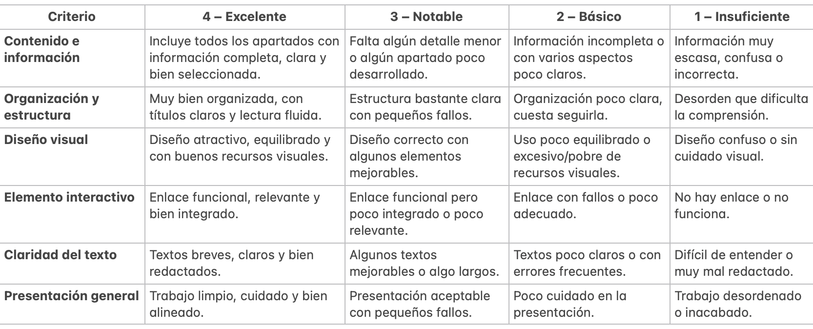

TAREA 5: CREACIÓN DE UNA INFOGRAFÍA.
|
Objetivos:
|
¿Recordáis que os dije que tomarais notas mientras escuchábamos los episodios?
Bueno, no os preocupéis. Podéis escuchar de nuevo el episodio, ya sabéis que accedéis a ellos desde el padlet que creamos.
Con la información que recopiléis del episodio escogido tendréis que realizar una infografía digital que contenga al menos un elemento interactivo, es decir debe contener alguna animación o algún enlace... la haréis con la herramienta Canva y debe incluir los siguientes elementos:
- Identificación de la figura femenina: nombre completo y, si es posible, época o contexto histórico en el que vivió.
- Información básica: breve explicación de quién fue (origen, situación, contexto).
- Hechos relevantes: 2–3 aspectos importantes de su vida o acciones destacadas.
- Importancia del personaje: explicación clara de por qué es relevante o por qué merece ser recordada.
- Organización visual: La información debe estar bien estructurada, con títulos, apartados y orden claro.
- Elementos visuales: Imágenes, iconos o recursos gráficos que ayuden a entender mejor la información (no solo decoración)
Para hacer la infografía, debéis seguir las siguientes instrucciones (además de dejarlas aquí alojadas para que podáis consultarlas, os las explicaré de modo práctico en clase):
a) Accede a Canva:
Entra en la página www.canva.com o abre la aplicación en tu dispositivo.
Inicia sesión con tu cuenta (para minimizar el impacto de los productos digitales fuera del ámbito académico, accederéis a la herramienta con la cuenta de Educastur)
b) Busca la plantilla adecuada:
En la barra de búsqueda escribe “infografía”
Canva te mostrará muchas plantillas prediseñadas.
Elige la que más se adapte al tema que vais a trabajar.
c) Personaliza la plantilla:
Texto: cambia los títulos y párrafos por tu propia información.
Colores y fuentes: selecciona los que mejor representen tu idea o tu estilo.
Iconos e imágenes: añade elementos visuales desde la biblioteca de Canva o sube los tuyos.
d) Organiza la información:
Usa frases cortas y claras.
Divide el contenido en secciones con subtítulos.
Apóyate en gráficos, iconos o ilustraciones para que sea más visual.
e) Revisa el diseño:
Comprueba que los textos se leen bien (tamaño y contraste de color).
Asegúrate de que los elementos estén alineados y ordenados.
Evita sobrecargar la infografía con demasiada información.
f) Inserta el elemento interactivo:
Para insertar un hipervínculo sigue estos pasos:
1. Selecciona un texto, icono o imagen.
2. Haz clic en el botón de enlace.
3. Pega una dirección web (por ejemplo, una definición, un vídeo explicativo de YouTube, una imagen o una página con ejemplos).
g) Revisa la interactividad:
Haz clic en “Presentar” o “Compartir” para comprobar que los enlaces funcionan.
Asegúrate de que los botones o textos enlazados estén bien visibles y claros.
h) Guarda y comparte:
Haz clic en “Compartir” o “Descargar”.
Elige el formato (PNG, JPG o PDF).
Cada grupo me enviará la infografía por Teams.
INFOGRAFÍA QUE LA DOCENTE UTILIZARÁ PARA EVALUAR EL TRABAJO:
